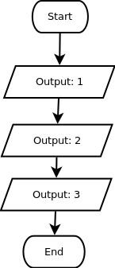

Untuk dilakukan:
Susunlah blok program sehingga sesuai dengan flowchart di bawah ini, kemudian tekan tombol evaluate:

Sebentar lagi, kita akan belajar tentang konsep perulangan. Konsep ini termasuk cukup sulit, oleh karena itu, kita coba dulu dengan hal yang sederhana. Menampilkan angka 1 sampai 3.